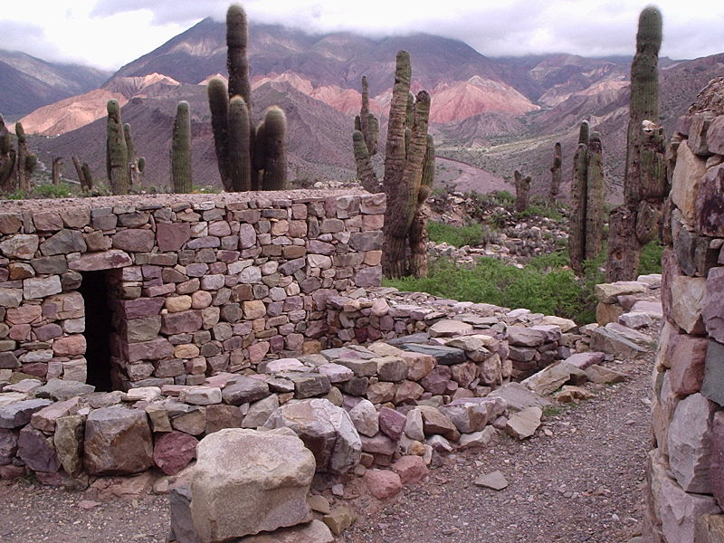
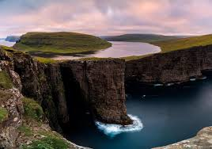
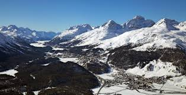
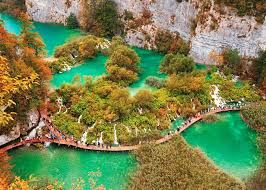
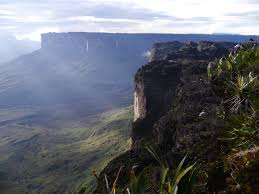
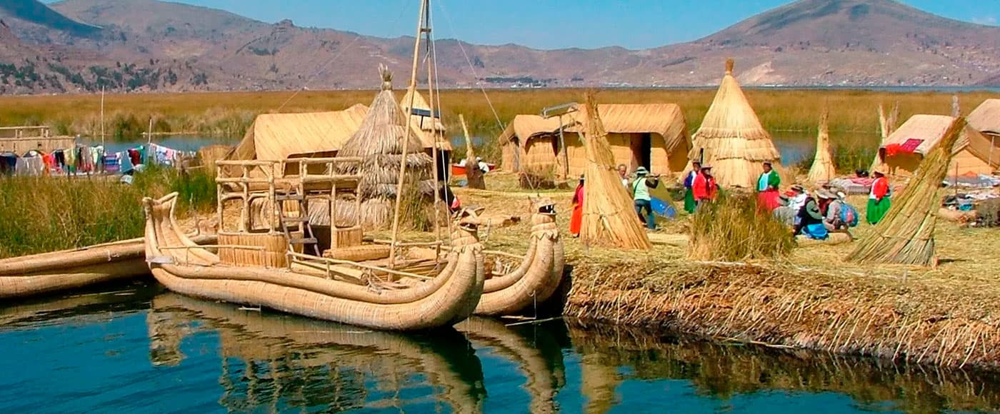
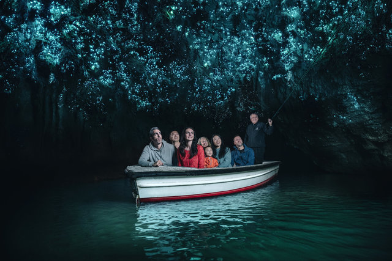

GEOGRAPHICAL PLACES
1 / 10

Molokai
2 / 10

Canyonlands National Park
3 / 10

Jujuy Province
4 / 10

Faroe Islands
5 / 10

Engadine Valley
6 / 10

Plitvice Lakes National Park
7 / 10

Skeleton Coast
8 / 10

Mount Roraima
9 / 10

Southern Peru
10 / 10

Waitomo Glowworm Caves
Molokai
Molokaʻi is the fifth most populated of the eight major islands that make up the Hawaiian Islands archipelago in the middle of the Pacific Ocean. It is 38 by 10 miles (61 by 16 km) in size at its extreme length and width with a usable land area of 260 square miles (673.40 km2), making it the fifth-largest of the main Hawaiian Islands and the 27th largest island in the United States.It lies east of Oʻahu across the 25-mile (40 km) wide Kaʻiwi Channel and north of Lānaʻi, separated from it by the Kalohi Channel.
The island is an agrarian society, where the economy has been driven primarily by cattle ranching, pineapple production, and sugar cane production, and small-scale farms. Tourism comprises a small fraction of the island's economy, and much of the infrastructure related to tourism was closed and barricaded in the early 2000s as the primary landowner, Molokai Ranch, closed operations due to substantial revenue losses.
For more details
Canyonlands National Park
Canyonlands National Park is an American national park located in southeastern Utah near the town of Moab. The park preserves a colorful landscape eroded into numerous canyons, mesas, and buttes by the Colorado River, the Green River, and their respective tributaries.The park is divided into four districts: the Island in the Sky, the Needles, the Maze, and the combined rivers—the Green and Colorado—which carved two large canyons into the Colorado Plateau. While these areas share a primitive desert atmosphere, each retains its own character.The Maze district is located west of the Colorado and Green rivers. The Maze is the least accessible section of the park, and one of the most remote and inaccessible areas of the United States.
For more details
Jujuy Province

Jujuy is a province of Argentina, located in the extreme northwest of the country, at the borders with Chile and Bolivia. The only neighbouring Argentine province is Salta to the east and south.An important and still growing activity, tourism in the area brings a number of Argentine tourists (80%), tourists from other South American countries (12%) and Europeans (7%). Most tourists head for San Salvador de Jujuy to start their exploration of the province. The Horacio Guzmán international airport, 34 km from San Salvador, connects the province with Buenos Aires, Córdoba, and some destinations in Bolivia.
Apart from the fantastic contrast of land colours and formations, tourists are attracted also by the strong aboriginal roots in the culture of Jujuy. Aymará and Quechua cultures coexist in the area, and ruins of the Incas are well conserved.
Tourists who come to Jujuy visit the area of the Quebrada de Humahuaca and its Cerro de los Siete Colores, Pucará de Tilcara, Salinas Grandes and many small towns. Other less frequent destinations include the Calilegua National Park in the Yungas jungle, La Quiaca, Laguna de Pozuelos, and Laguna Guayatayoc.
For more details
Faroe Islands

Faeroe Islands, is a North Atlantic archipelago located 320 kilometres (200 mi) north-northwest of Scotland, and about halfway between Norway and Iceland. It is an autonomous territory within the Kingdom of Denmark. The islands have a total area of about 1,400 square kilometres (540 sq mi) with a population of 51,783 as of June 2019.The natural vegetation of the Faroe Islands is dominated by arctic-alpine plants, wildflowers, grasses, moss, and lichen. Most of the lowland area is grassland and some is heath, dominated by shrubby heathers, mainly Calluna vulgaris. Among the herbaceous flora that occur in the Faroe Islands is the cosmopolitan marsh thistle, Cirsium palustre.Because of the rugged terrain, road transport in the Faroe Islands was not as extensive as in other parts of the world. This has now changed, and the infrastructure has been developed extensively. Some 80 percent of the population of the islands is connected by tunnels through the mountains and between the islands, bridges and causeways that link together the three largest islands and three other islands to the northeast. While the other two large islands to the south, Sandoy and Suðuroy, are connected to the main area with ferries, the small islands Koltur and Stóra Dímun have no ferry connection, only a helicopter service.
For more details
Engadine Valley

The Engadin or Engadine is a long high Alpine valley region in the eastern Swiss Alps in the canton of Graubünden in southeasternmost Switzerland with about 25,000 inhabitants.
The Engadine is protected by high mountain ranges on all sides and is famous for its sunny climate, beautiful landscapes and outdoor activities.
In the Upper Engadine, as a result of the strong influx of people related to tourism, mainly from outside of Switzerland (mainly from Italy, Austria, Germany), the number of (Swiss) German and Italian speakers outnumber Romansh speakers, and in the heavily touristed village of St. Moritz there are few Romansh speakers to be found. In the Lower Engadine, Romansch is still the most widely spoken language, but almost all of the people also speak the Grisonian Swiss German and (the Swiss variety of) Standard German as a second and third language.
For more details
Plitvice Lakes National Park

Plitvice Lakes National Park is one of the oldest and largest national parks in Croatia.The important north–south road that passes through the national park area connects the Croatian inland with the Adriatic coastal region.
he national park is world-famous for its lakes arranged in cascades. Sixteen lakes can be seen from the surface.These lakes are a result of the confluence of several small rivers and subterranean karst rivers. The lakes are all interconnected and follow the water flow.
The particular geographic position of the Plitvice Lakes and the specific climate features contributed to the emergence of many natural phenomena and a rich biodiversity within this area. Despite the vicinity to the Mediterranean climatic region, a moderate mountainous climate prevails at the Plitvice Lakes. These climatic conditions prevail due to the Velebit mountain range, which acts as a climatic separator between the coastal region and the Lika high plateau. For centuries, legends have been created about this mythic mountain range.
For more details
Skeleton Coast

The Skeleton Coast is the northern part of the Atlantic coast of Namibia and south of Angola from the Kunene River south to the Swakop River, although the name is sometimes used to describe the entire Namib Desert coast. The Bushmen of the Namibian interior called the region "The Land God Made in Anger", while Portuguese sailors once referred to it as "The Gates of Hell".
The area's name derives from the whale and seal bones that once littered the shore from the whaling industry, although in modern times the coast harbours the skeletal remains of the shipwrecks caught by offshore rocks and fog.
Namibia has declared the 16,000 square kilometres (6,200 sq mi) Skeleton Coast National Park over much of the area, from the Ugab River to the Kunene. The northern half of the park is a designated wilderness area. Notable features are the clay castles of the Hoarusib River, the Agate Mountain salt pans and the large seal colony at Cape Fria. The remainder of the coast is the National West Coast Recreation Area.
For more details
Mount Roraima

Mount Roraima lies on the Guiana Shield in the southeastern corner of Venezuela's 30,000-square-kilometre (12,000-square-mile) Canaima National Park forming the highest peak of Guyana's Highland Range.
any of the species found on Roraima are unique to the tepui plateaus with two local endemic plants found on Roraima summit. Plants such as pitcher plants (Heliamphora), Campanula (a bellflower), and the rare Rapatea heather are commonly found on the escarpment and summit.
Since long before the arrival of European explorers, the mountain has held a special significance for the indigenous people of the region, and it is central to many of their myths and legends. The Pemon and Kapon natives of the Gran Sabana see Mount Roraima as the stump of a mighty tree that once held all the fruits and tuberous vegetables in the world. Felled by Makunaima, their mythical trickster, the tree crashed to the ground, unleashing a terrible flood.[15]Roroi in the Pemon language means blue-green and ma means great.
For more details
Southern Peru

Southern Peruvian operations include the mines located at the Cuajone and Toquepala mines. The two mines produced a total of 359,655 tons of copper in 2007, with Cuajone producing 182,117 tons and Toquepala producing 177,538 tons.
Tia Maria is a copper project mine which has been granted the environmental approval by the Peruvian Ministry of Energy and Mining (MINEM) to move forward with the project development. Geoservice Ingeniería was the engineering and consulting firm in charge of executing satisfactory the Environmental Impact Assessment (EIA) studies, the EIA approval was received on August 1, 2014 with directorial resolution Nº392-2014-MEM/DGA-AM given by MINEM.
Since 2012, the company has made major strides in improving their production methods. During 2013, 60.7 million dollars in environmental capital expenditures were spent on the following programs: water recovery systems to conserve water and minimize impact on nearby streams; vegetation programs to stabilize the surface of the tailings dumps; implementation of scrubbing technology in the mines to reduce dust emissions. For these continued efforts towards sustainable practices, the company was awarded with the Fray International Sustainability Award in 2014. CEO M. Oscar Gonzalez Rocha, appeared in Mexico for the SIPS 2014/Shechtman International Symposium to accept this award on the company's behalf.
For more details
Waitomo Glowworm Caves

The Waitomo Glowworm Caves attraction is a cave at Waitomo on the North Island of New Zealand. It is known for its population of Arachnocampa luminosa, a glowworm species found exclusively in New Zealand. This cave is part of the waitomo streamway system that includes the Ruakuri Cave, Lucky Strike, and Tumutumu Cave.
The attraction has a modern visitor centre at the entrance, largely designed in wood. There are organized tours that include a boat ride under the glowworms.
Geological and volcanic activity has created around 300 known limestone caves in the Waitomo region over the last 30 million years.
The limestone formation in the Waitomo Glowworm Caves occurred when the region was still under the ocean about 30 million years ago. The limestone is composed of fossilized corals, seashells, fish skeletons, and many small marine organisms on the sea beds. Over millions of years, these fossilized rocks have been layered upon each other and compressed to create limestone and within the Waitomo region the limestone can be over 200 m thick.
The caves began to form when earth movement caused the hard limestone to bend and buckle under the ocean and rise above the sea floor. As the rock was exposed to air, it separated and created cracks and weaknesses that allowed for water to flow through them dissolving the limestone and over millions of years large caves were formed.
The glowworms of the Waitomo Glowworm Caves are closely guarded by a Scientific Advisory Group. This group has automated equipment that continually monitors the air quality especially the carbon dioxide levels, rock and air temperature, and humidity. Data from this equipment is carefully analyzed by specialist staff. The advisory group uses the information to establish how the cave should be managed. They determine if and when air flow patterns should be changed and how many people are allowed to visit the caves each day.
For more details